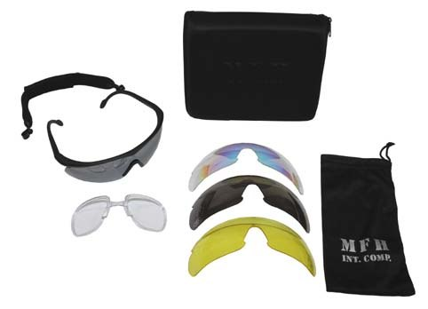
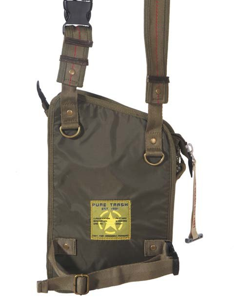
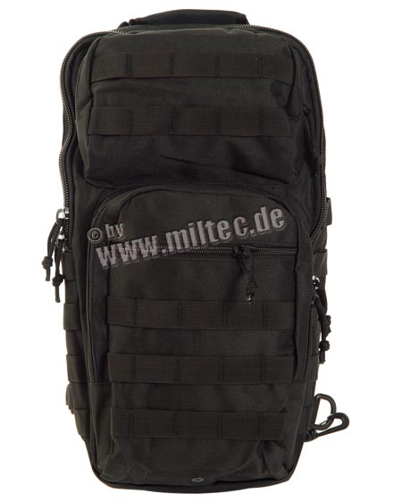
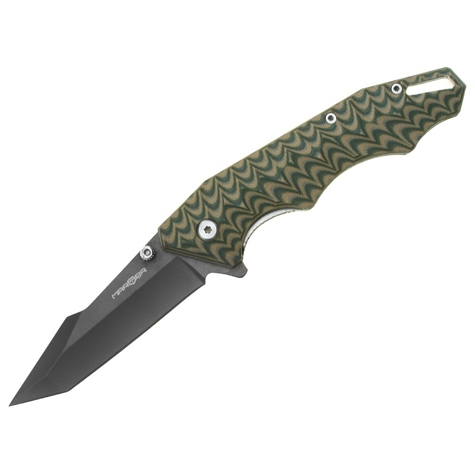
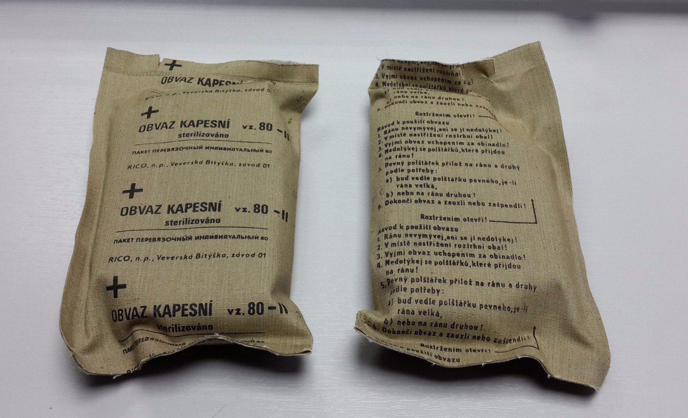

|  |
Очки армейские спортивные "Storm", черные, 3 запасных стекла. Транспортная упаковка. Стандарт CE EN 166. Пулевой тест: 6 мм стальной шарик 120 м/сек. Производство MFH. |
|  |
Schultertasche, Nylon, "PT", oliv. (изнаночная сторона ) 1 внутренний карман на молнии, размер: длина около 20 см, ширина 6 см, высота 30 см, 100% нейлон. |
|  |
Рюкзак "ONE STRAP ASSAULT PACK LG" (large), В чёрном цвете. Характеристики: 100% полиэстер, габариты: 48 x 33 x 27 см. Вес: 1.100 гр. Литраж: около 30-35 литров. |
|  |
Нож Marser Ka-3 (Лот 734) Серия ножей #Marser Kämpfer ('Боец') - тактические ножи, готовые к использованию за считанные секунды, удобные практически для любого хвата, универсальные для множества задач. Нож складного типа Marser Ka-3 выполнен в агрессивном стиле. Его клинок типа Tanto обладает размером 77 мм и оснащается фальшлезвием, которое дополняется рукоятью из стеклотекстолита G10 цвета хаки. Оригинальное исполнение рукоятки придает описываемой модели интересный вид и делает ее более комфортной в использовании. Сталь, которая использована в клинке - 7Cr17MoV, характеризуется твердостью 57-59 HRC. Она не подвергается окислению, прекрасно затачивается и продолжительное время не затупляется. Нож в закрытом виде фиксируется специальным замком Liner Lock. Общая длина ножа - 193 мм. Производитель: Marser Общая длина (мм): 193 Длина клинка (мм): 77 Длина рукояти (мм): 116 Масса (г); 113 Тип клинка: Modified Tanto Толщина обуха клинка (мм): 3.0 Твердость клинка (HRC): 57-59 Материал клинка: Сталь 7Cr17MoV Обработка или покрытие клинка: Титановое покрытие Замок: Liner Lock Материал рукояти ножа: G-10 Тип режущей кромки: Гладкая Способ извлечения клинка: Вручную при помощи штифта у оси или плавника Клипса: есть Страна происхождения: Китай |
|  |
ИПП (индивидуальный перевязочный пакет) армии Чехословакии (Лот 009) Армейский контрактный оригинал, времен Варшавского договора. Предназначен для оказания первой медицинской помощи. Водонепроницаемая герметичная упаковка. Вскрывается по линии надрыва без использования инструментов. Состав: Зеленый бинт длиной 6 метров, 2 стерильных тампона, фиксирующая булавка. Один из тампонов жестко закреплен на бинте, второй свободно по нему перемещается для удобства наложения на любое ранение. Бинт защитного цвета, потому при необходимости возможно применять поверх одежды. 🔹 Размер ИПП 10 х 15 см 🔹 Вес в сборе 80 гр. 🔹 Состояние: новые, складского хранения. |